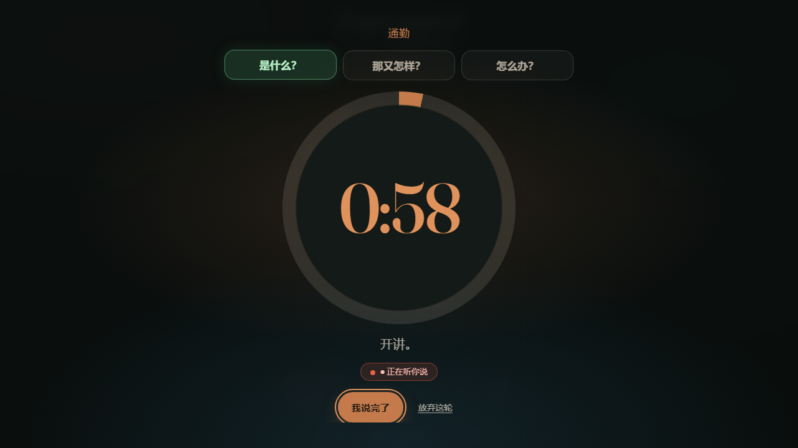
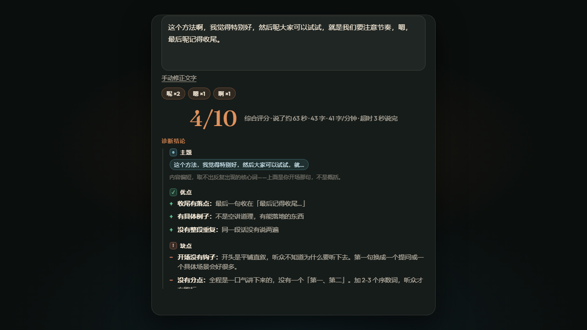
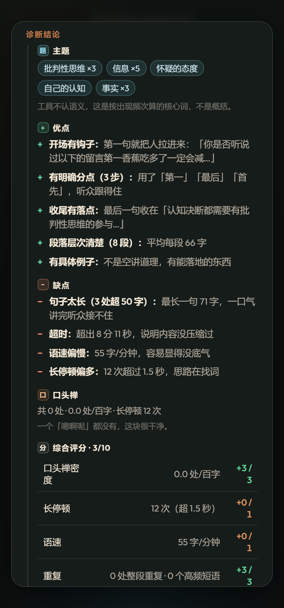
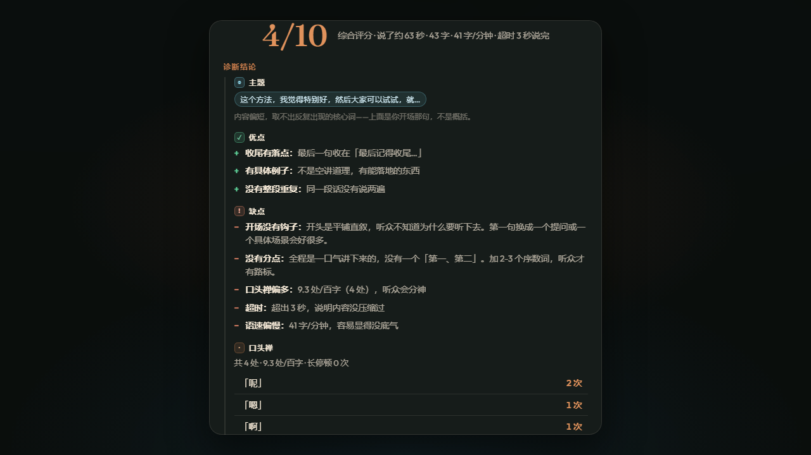
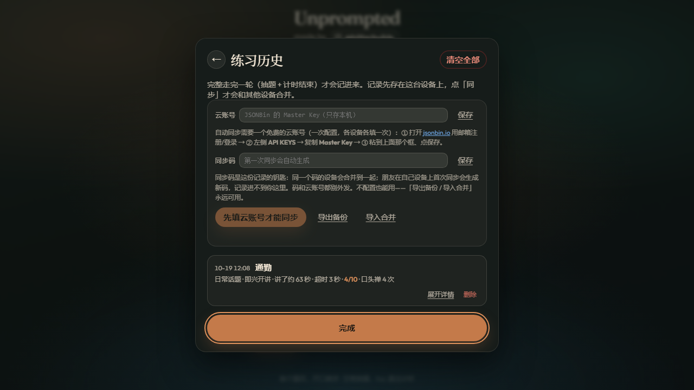
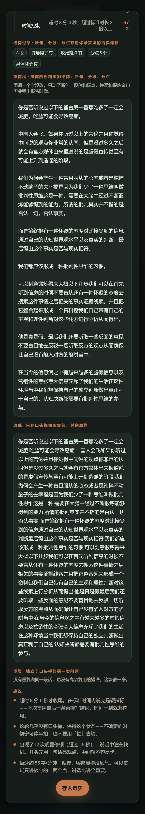

1
双模式计时
即兴开讲 60 秒 / 深度研究 180 秒
- 两种模式：即兴开讲对应短准备，深度研究对应长准备，时长分开记忆
- 超时不打断：倒计时归零只响铃，自动切换正计时（橙色脉冲环），讲到自己满意为止
- 完成语义：只有点「我说完了」才算走完一轮，中途放弃不计入历史
- 环形进度：剩余时间一目了然，超时后数字变号继续走

从 unprompted.cool 复刻并中文化，再一路改造成自己的口语训练器 —— 抽题、讲一分钟，自动拿到带证据的诊断报告
单文件网页、零依赖，复刻自 unprompted.cool 并中文化，之后按自己的练习习惯持续改造
讲嗨了不被机器打断，讲没词了自己按停 —— 尊重真实的表达节奏
即兴开讲 60 秒 / 深度研究 180 秒

一个真实抱怨逼出来的架构修正

主题 / 优点 / 缺点 / 口头禅 / 综合评分五个板块，不写空话，判断给证据
像教练点评，不像机器报数

口头禅、停顿、语速、重复、时间控制 —— 十分制，每一分都能复算
口头禅 3 · 长停顿 1 · 语速 1 · 重复 3 · 时间控制 2

本地为主，云只是合并通道

545 字无标点的口播原稿，机器负责断句和去重，一个词都不替你换
只动标点和分段，用词一字不改

这不是「让 AI 写了个网页」，而是一路踩坑、验证、固化的过程
Playwright 覆盖全流程：计时归零转正计时、诊断五板块顺序、重构稿子序列校验、麦克风授权录音、控制台零报错。页面抛错即使功能全对也算失败。
发布平台把页面套进跨域 iframe，而 iframe 没有 allow="microphone" —— 录音必然被拒且无解。最终方案：上传公网直链顶层打开，iPhone Safari 实测录音正常。
免注册云全部死于 CORS 或容量：有的 Cloudflare 403，有的写接口不返回跨域头，有的单条超 1.5KB 就 500。结论沉淀成选型方法：浏览器里测，CORS 是判官。